| Symbol |
Description |
Ammeter_AC | Description: AC ammeter
Keys: ammeter AC ampere meter |
Ammeter_DC | Description: DC ammeter
Keys: ammeter DC ampere meter |
Antenna | Description: Antenna
Keys: antenna |
Antenna_Chip | Description: Ceramic chip antenna with pin for PCB trace
Keys: antenna |
Antenna_Dipole | Description: Dipole antenna
Keys: dipole antenna |
Antenna_Loop | Description: Loop antenna
Keys: loop antenna |
Antenna_Shield | Description: Antenna with extra pin for shielding
Keys: antenna |
Battery | Description: Multiple-cell battery
Keys: batt voltage-source cell |
Battery_Cell | Description: Single-cell battery
Keys: battery cell |
Buzzer | Description: Buzzer, polarized
Keys: quartz resonator ceramic |
C | Description: Unpolarized capacitor
Keys: cap capacitor |
C_Feedthrough | Description: Feedthrough capacitor
Keys: EMI filter feedthrough capacitor |
C_Polarized | Description: Polarized capacitor
Keys: cap capacitor |
C_Polarized_Small | Description: Polarized capacitor, small symbol
Keys: cap capacitor |
C_Polarized_Small_US | Description: Polarized capacitor, small US symbol
Keys: cap capacitor |
C_Polarized_US | Description: Polarized capacitor, US symbol
Keys: cap capacitor |
C_Small | Description: Unpolarized capacitor, small symbol
Keys: capacitor cap |
C_Trim | Description: Trimmable capacitor
Keys: trimmer variable capacitor |
C_Trim_Differential | Description: Differential variable capacitor with two stators
Keys: trimmer capacitor |
C_Trim_Small | Description: Trimmable capacitor, small symbol
Keys: trimmer variable capacitor |
C_Variable | Description: Variable capacitor
Keys: trimmer capacitor |
CircuitBreaker_1P | Description: Single pole circuit breaker
Keys: CB |
CircuitBreaker_1P_US | Description: Single pole circuit breaker, US symbol
Keys: CB |
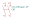
CircuitBreaker_2P | Description: Double pole circuit breaker
Keys: CB 2P |
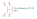
CircuitBreaker_2P_US | Description: Double pole circuit breaker, US symbol
Keys: CB 2P |
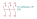
CircuitBreaker_3P | Description: Triple pole circuit breaker
Keys: CB 3P |
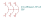
CircuitBreaker_3P_US | Description: Triple pole circuit breaker, US symbol
Keys: CB 3P |
Crystal | Description: Two pin crystal
Keys: quartz ceramic resonator oscillator |
Crystal_GND2 | Description: Three pin crystal, GND on pin 2
Keys: quartz ceramic resonator oscillator |
Crystal_GND23 | Description: Four pin crystal, GND on pins 2 and 3
Keys: quartz ceramic resonator oscillator |
Crystal_GND23_Small | Description: Four pin crystal, GND on pins 2 and 3, small symbol
Keys: quartz ceramic resonator oscillator |
Crystal_GND24 | Description: Four pin crystal, GND on pins 2 and 4
Keys: quartz ceramic resonator oscillator |
Crystal_GND24_Small | Description: Four pin crystal, GND on pins 2 and 4, small symbol
Keys: quartz ceramic resonator oscillator |
Crystal_GND2_Small | Description: Three pin crystal, GND on pin 2, small symbol
Keys: quartz ceramic resonator oscillator |
Crystal_GND3 | Description: Three pin crystal, GND on pin 3
Keys: quartz ceramic resonator oscillator |
Crystal_GND3_Small | Description: Three pin crystal, GND on pin 3, small symbol
Keys: quartz ceramic resonator oscillator |
Crystal_Small | Description: Two pin crystal, small symbol
Keys: quartz ceramic resonator oscillator |
D | Description: Diode
Keys: diode |
D_AAK | Description: Diode, anode on pins 1 and 2
Keys: diode |
D_Bridge_+-AA | Description: Diode bridge, +ve/-ve/AC/AC
Keys: rectifier ACDC |
D_Bridge_+A-A | Description: Diode bridge, +ve/AC/-ve/AC
Keys: rectifier ACDC |
D_Bridge_+AA- | Description: Diode bridge, +ve/AC/AC/-ve
Keys: rectifier ACDC |
D_Bridge_-A+A | Description: Diode bridge, -ve/AC/+ve/AC
Keys: rectifier ACDC |
D_Bridge_-AA+ | Description: Diode bridge, -ve/AC/AC/+ve
Keys: rectifier ACDC |
D_Capacitance | Description: Variable capacitance diode
Keys: capacitance diode varicap varactor |
D_Capacitance_Filled | Description: Variable capacitance diode, filled shape
Keys: capacitance diode varicap varactor |
D_Dual_CommonAnode_AKK | Description: Dual diode, common anode on pin 1
Keys: diode |
D_Dual_CommonAnode_AKK_Parallel | Description: Dual diode, common anode on pin 1
Keys: diode |
D_Dual_CommonAnode_AKK_Split | Description: Dual diode, common anode on pin 1
Keys: diode |
D_Dual_CommonAnode_KAK | Description: Dual diode, common anode on pin 2
Keys: diode |
D_Dual_CommonAnode_KAK_Parallel | Description: Dual diode, common anode on pin 1
Keys: diode |
D_Dual_CommonAnode_KAK_Split | Description: Dual diode, common anode on pin 1
Keys: diode |
D_Dual_CommonAnode_KKA | Description: Dual diode, common anode on pin 3
Keys: diode |
D_Dual_CommonAnode_KKA_Parallel | Description: Dual diode, common anode on pin 1
Keys: diode |
D_Dual_CommonAnode_KKA_Split | Description: Dual diode, common anode on pin 1
Keys: diode |
D_Dual_CommonCathode_AAK | Description: Dual diode, common cathode on pin 3
Keys: diode |
D_Dual_CommonCathode_AAK_Parallel | Description: Dual diode, common anode on pin 1
Keys: diode |
D_Dual_CommonCathode_AAK_Split | Description: Dual diode, common anode on pin 1
Keys: diode |
D_Dual_CommonCathode_AKA | Description: Dual diode, common cathode on pin 2
Keys: diode |
D_Dual_CommonCathode_AKA_Parallel | Description: Dual diode, common anode on pin 1
Keys: diode |
D_Dual_CommonCathode_AKA_Split | Description: Dual diode, common anode on pin 1
Keys: diode |
D_Dual_CommonCathode_KAA | Description: Dual diode, common cathode on pin 1
Keys: diode |
D_Dual_CommonCathode_KAA_Parallel | Description: Dual diode, common anode on pin 1
Keys: diode |
D_Dual_CommonCathode_KAA_Split | Description: Dual diode, common anode on pin 1
Keys: diode |
D_Dual_Series_ACK | Description: Dual diode, anode/center/cathode
Keys: diode |
D_Dual_Series_ACK_Parallel | Description: Dual diode, anode/center/cathode
Keys: diode |
D_Dual_Series_ACK_Split | Description: Dual diode, anode/center/cathode
Keys: diode |
D_Dual_Series_AKC | Description: Dual diode, anode/cathode/center
Keys: diode |
D_Dual_Series_AKC_Parallel | Description: Dual diode, anode/cathode/center
Keys: diode |
D_Dual_Series_AKC_Split | Description: Dual diode, anode/cathode/center
Keys: diode |
D_Dual_Series_CAK | Description: Dual diode, center/anode/cathode
Keys: diode |
D_Dual_Series_CAK_Parallel | Description: Dual diode, center/anode/cathode
Keys: diode |
D_Dual_Series_CAK_Split | Description: Dual diode, center/anode/cathode
Keys: diode |
D_Dual_Series_CKA | Description: Dual diode, center/cathode/anode
Keys: diode |
D_Dual_Series_CKA_Parallel | Description: Dual diode, center/cathode/anode
Keys: diode |
D_Dual_Series_CKA_Split | Description: Dual diode, center/cathode/anode
Keys: diode |
D_Dual_Series_KAC | Description: Dual diode, cathode/anode/center
Keys: diode |
D_Dual_Series_KAC_Parallel | Description: Dual diode, cathode/anode/center
Keys: diode |
D_Dual_Series_KAC_Split | Description: Dual diode, cathode/anode/center
Keys: diode |
D_Dual_Series_KCA | Description: Dual diode, cathode/center/anode
Keys: diode |
D_Dual_Series_KCA_Parallel | Description: Dual diode, cathode/center/anode
Keys: diode |
D_Dual_Series_KCA_Split | Description: Dual diode, cathode/center/anode
Keys: diode |
D_Filled | Description: Diode, filled shape
Keys: diode |
D_KAA | Description: Diode, anode on pins 2 and 3
Keys: diode |
D_KAK | Description: Diode, cathode on pins 1 and 3
Keys: diode |
D_KKA | Description: Diode, cathode on pins 1 and 2
Keys: diode |
D_Laser_1A3C | Description: Laser diode, cathode on pin 3, anode on pin 1
Keys: opto laserdiode |
D_Laser_1C2A | Description: Laser diode, cathode on pin 1, anode on pin 2
Keys: opto laserdiode |
D_Laser_Photo_MType | Description: Laser diode with photodiode, common cathode on pin 2
Keys: opto laserdiode photodiode
Datasheet: http://www.egismos.disonhu.com/laser/diode-package.htm |
D_Laser_Photo_NType | Description: Laser diode with photodiode, center on pin 2, LD cathode on pin 1
Keys: opto laserdiode photodiode
Datasheet: http://www.egismos.disonhu.com/laser/diode-package.htm |
D_Laser_Photo_PType | Description: Laser diode with photodiode, center on pin 2, PD cathode on pin 3
Keys: opto laserdiode photodiode
Datasheet: http://www.egismos.disonhu.com/laser/diode-package.htm |
D_Photo | Description: Photodiode
Keys: photodiode diode opto |
D_Photo_Filled | Description: Photodiode, filled shape
Keys: photodiode diode opto |
D_Radiation | Description: Semiconductor radiation detector
Keys: radiation detector diode |
D_Radiation_Filled | Description: Semiconductor radiation detector, filled shape
Keys: radiation detector diode |
D_Schottky | Description: Schottky diode
Keys: diode Schottky |
D_Schottky_AAK | Description: Schottky diode, anode on pins 1 and 2
Keys: diode Schottky SCHDPAK |
D_Schottky_AKA | Description: Schottky diode, anode on pins 1 and 3
Keys: diode Schottky SCHDPAK |
D_Schottky_AKK | Description: Schottky diode, cathode on pins 2 and 3
Keys: diode Schottky SCHDPAK |
D_Schottky_Dual_CommonAnode_AKK | Description: Dual Schottky diode, common anode on pin 1
Keys: diode |
D_Schottky_Dual_CommonAnode_AKK_Parallel | Description: Dual Schottky diode, common anode on pin 1
Keys: diode |
D_Schottky_Dual_CommonAnode_AKK_Split | Description: Dual Schottky diode, common anode on pin 1
Keys: diode |
D_Schottky_Dual_CommonAnode_KAK | Description: Dual Schottky diode, common anode on pin 2
Keys: diode |
D_Schottky_Dual_CommonAnode_KAK_Parallel | Description: Dual Schottky diode, common anode on pin 1
Keys: diode |
D_Schottky_Dual_CommonAnode_KAK_Split | Description: Dual Schottky diode, common anode on pin 1
Keys: diode |
D_Schottky_Dual_CommonAnode_KKA | Description: Dual Schottky diode, common anode on pin 3
Keys: diode |
D_Schottky_Dual_CommonAnode_KKA_Parallel | Description: Dual Schottky diode, common anode on pin 1
Keys: diode |
D_Schottky_Dual_CommonAnode_KKA_Split | Description: Dual Schottky diode, common anode on pin 1
Keys: diode |
D_Schottky_Dual_CommonCathode_AAK | Description: Dual Schottky diode, common cathode on pin 3
Keys: diode |
D_Schottky_Dual_CommonCathode_AAK_Parallel | Description: Dual Schottky diode, common anode on pin 1
Keys: diode |
D_Schottky_Dual_CommonCathode_AAK_Split | Description: Dual Schottky diode, common anode on pin 1
Keys: diode |
D_Schottky_Dual_CommonCathode_AKA | Description: Dual Schottky diode, common cathode on pin 2
Keys: diode |
D_Schottky_Dual_CommonCathode_AKA_Parallel | Description: Dual Schottky diode, common anode on pin 1
Keys: diode |
D_Schottky_Dual_CommonCathode_AKA_Split | Description: Dual Schottky diode, common anode on pin 1
Keys: diode |
D_Schottky_Dual_CommonCathode_KAA | Description: Dual Schottky diode, common cathode on pin 1
Keys: diode |
D_Schottky_Dual_CommonCathode_KAA_Parallel | Description: Dual Schottky diode, common anode on pin 1
Keys: diode |
D_Schottky_Dual_CommonCathode_KAA_Split | Description: Dual Schottky diode, common anode on pin 1
Keys: diode |
D_Schottky_Dual_Series_ACK | Description: Dual Schottky diode, anode/center/cathode
Keys: diode |
D_Schottky_Dual_Series_ACK_Parallel | Description: Dual Schottky diode, anode/center/cathode
Keys: diode |
D_Schottky_Dual_Series_ACK_Split | Description: Dual Schottky diode, anode/center/cathode
Keys: diode |
D_Schottky_Dual_Series_AKC | Description: Dual Schottky diode, anode/cathode/center
Keys: diode |
D_Schottky_Dual_Series_AKC_Parallel | Description: Dual Schottky diode, anode/cathode/center
Keys: diode |
D_Schottky_Dual_Series_AKC_Split | Description: Dual Schottky diode, anode/cathode/center
Keys: diode |
D_Schottky_Dual_Series_CAK | Description: Dual Schottky diode, center/anode/cathode
Keys: diode |
D_Schottky_Dual_Series_CAK_Parallel | Description: Dual Schottky diode, center/anode/cathode
Keys: diode |
D_Schottky_Dual_Series_CAK_Split | Description: Dual Schottky diode, center/anode/cathode
Keys: diode |
D_Schottky_Dual_Series_CKA | Description: Dual Schottky diode, center/cathode/anode
Keys: diode |
D_Schottky_Dual_Series_CKA_Parallel | Description: Dual Schottky diode, center/cathode/anode
Keys: diode |
D_Schottky_Dual_Series_CKA_Split | Description: Dual Schottky diode, center/cathode/anode
Keys: diode |
D_Schottky_Dual_Series_KAC | Description: Dual Schottky diode, cathode/anode/center
Keys: diode |
D_Schottky_Dual_Series_KAC_Parallel | Description: Dual Schottky diode, cathode/anode/center
Keys: diode |
D_Schottky_Dual_Series_KAC_Split | Description: Dual Schottky diode, cathode/anode/center
Keys: diode |
D_Schottky_Dual_Series_KCA | Description: Dual Schottky diode, cathode/center/anode
Keys: diode |
D_Schottky_Dual_Series_KCA_Parallel | Description: Dual Schottky diode, cathode/center/anode
Keys: diode |
D_Schottky_Dual_Series_KCA_Split | Description: Dual Schottky diode, cathode/center/anode
Keys: diode |
D_Schottky_Filled | Description: Schottky diode, filled shape
Keys: diode Schottky |
D_Schottky_KAA | Description: Schottky diode, anode on pins 2 and 3
Keys: diode Schottky SCHDPAK |
D_Schottky_KAK | Description: Schottky diode, cathode on pins 1 and 3
Keys: diode Schottky SCHDPAK |
D_Schottky_KKA | Description: Schottky diode, cathode on pins 1 and 2
Keys: diode Schottky SCHDPAK |
D_Schottky_Small | Description: Schottky diode, small symbol
Keys: diode Schottky |
D_Schottky_Small_Filled | Description: Schottky diode, small symbol, filled shape
Keys: diode Schottky |
D_Shockley | Description: Shockley (PNPN) diode
Keys: Shockley diode PNPN |
D_SiPM | Description: Silicon photomultiplier
Keys: SiPM MPPC SPAD photon counting |
D_Small | Description: Diode, small symbol
Keys: diode |
D_Small_Filled | Description: Diode, small symbol, filled shape
Keys: diode |
D_TemperatureDependent | Description: Temperature dependent diode
Keys: temperature sensor diode |
D_TemperatureDependent_Filled | Description: Temperature dependent diode, filled shape
Keys: temperature sensor diode |
D_Tunnel | Description: Tunnel diode (Esaki diode)
Keys: tunnel diode |
D_Tunnel_Filled | Description: Tunnel diode (Esaki diode), filled shape
Keys: tunnel diode |
D_TVS | Description: Bidirectional transient-voltage-suppression diode
Keys: diode TVS thyrector |
D_TVS_Dual_AAC | Description: Bidirectional dual transient-voltage-suppression diode, center on pin 3
Keys: diode TVS thyrector |
D_TVS_Dual_ACA | Description: Bidirectional dual transient-voltage-suppression diode, center on pin 2
Keys: diode TVS thyrector |
D_TVS_Dual_CAA | Description: Bidirectional dual transient-voltage-suppression diode, center on pin 1
Keys: diode TVS thyrector |
D_TVS_Filled | Description: Bidirectional transient-voltage-suppression diode, filled shape
Keys: diode TVS thyrector |
D_Unitunnel | Description: Unitunnel diode
Keys: unitunnel diode |
D_Unitunnel_Filled | Description: Unitunnel diode, filled shape
Keys: unitunnel diode |
D_Zener | Description: Zener diode
Keys: diode |
D_Zener_Dual_CommonAnode_AKK | Description: Dual Zener diode, common anode on pin 1
Keys: diode zener dual |
D_Zener_Dual_CommonAnode_AKK_Parallel | Description: Dual Zener diode, common anode on pin 1
Keys: diode |
D_Zener_Dual_CommonAnode_AKK_Split | Description: Dual Zener diode, common anode on pin 1
Keys: diode |
D_Zener_Dual_CommonAnode_KAK | Description: Dual Zener diode, common anode on pin 2
Keys: diode zener dual |
D_Zener_Dual_CommonAnode_KAK_Parallel | Description: Dual Zener diode, common anode on pin 1
Keys: diode |
D_Zener_Dual_CommonAnode_KAK_Split | Description: Dual Zener diode, common anode on pin 1
Keys: diode |
D_Zener_Dual_CommonAnode_KKA | Description: Dual Zener diode, common anode on pin 3
Keys: diode zener dual |
D_Zener_Dual_CommonAnode_KKA_Parallel | Description: Dual Zener diode, common anode on pin 1
Keys: diode |
D_Zener_Dual_CommonAnode_KKA_Split | Description: Dual Zener diode, common anode on pin 1
Keys: diode |
D_Zener_Dual_CommonCathode_AAK | Description: Dual Zener diode, common cathode on pin 3
Keys: diode zener dual |
D_Zener_Dual_CommonCathode_AAK_Parallel | Description: Dual Zener diode, common anode on pin 1
Keys: diode |
D_Zener_Dual_CommonCathode_AAK_Split | Description: Dual Zener diode, common anode on pin 1
Keys: diode |
D_Zener_Dual_CommonCathode_AKA | Description: Dual Zener diode, common cathode on pin 2
Keys: diode zener dual |
D_Zener_Dual_CommonCathode_AKA_Parallel | Description: Dual Zener diode, common anode on pin 1
Keys: diode |
D_Zener_Dual_CommonCathode_AKA_Split | Description: Dual Zener diode, common anode on pin 1
Keys: diode |
D_Zener_Dual_CommonCathode_KAA | Description: Dual Zener diode, common cathode on pin 1
Keys: diode zener dual |
D_Zener_Dual_CommonCathode_KAA_Parallel | Description: Dual Zener diode, common anode on pin 1
Keys: diode |
D_Zener_Dual_CommonCathode_KAA_Split | Description: Dual Zener diode, common anode on pin 1
Keys: diode |
D_Zener_Filled | Description: Zener diode, filled shape
Keys: diode |
D_Zener_Small | Description: Zener diode, small symbol
Keys: diode |
D_Zener_Small_Filled | Description: Zener diode, small symbol, filled shape
Keys: diode |
DelayLine | Description: Delay line
Keys: delay propagation retard impedance |
DIAC | Description: Diode for alternating current
Keys: AC diode DIAC |
DIAC_Filled | Description: Diode for alternating current, filled shape
Keys: AC diode DIAC |
Earphone | Description: Earphone, polarized
Keys: earphone speaker headphone |
ElectromagneticActor | Description: Electromagnetic actor
Keys: electromagnet coil inductor |
FerriteBead | Description: Ferrite bead
Keys: L ferrite bead inductor filter |
FerriteBead_Small | Description: Ferrite bead, small symbol
Keys: L ferrite bead inductor filter |
Filter_EMI_C | Description: EMI filter, single capacitor
Keys: EMI filter feedthrough capacitor
Datasheet: http://www.murata.com/~/media/webrenewal/support/library/catalog/products/emc/emifil/c31e.ashx?la=en-gb |
Filter_EMI_CLC | Description: EMI T-filter (CLC)
Keys: EMI T-filter
Datasheet: http://www.murata.com/~/media/webrenewal/support/library/catalog/products/emc/emifil/c31e.ashx?la=en-gb |
Filter_EMI_CommonMode | Description: EMI 2-inductor common mode filter
Keys: EMI common mode filter |
Filter_EMI_LCL | Description: EMI T-filter (LCL)
Keys: EMI T-filter
Datasheet: http://www.murata.com/~/media/webrenewal/support/library/catalog/products/emc/emifil/c31e.ashx?la=en-gb |
Filter_EMI_LL | Description: EMI 2-inductor filter
Keys: EMI filter |
Filter_EMI_LL_1423 | Description: EMI 2-inductor filter, pin-connections 1-4 and 2-3
Keys: EMI filter common-mode choke |
FrequencyCounter | Description: Frequency counter
Keys: frequency counter |
Fuse | Description: Fuse
Keys: fuse |
Fuse_Polarized | Description: Polarized fuse
Keys: fuse |
Fuse_Polarized_Small | Description: Polarized fuse, small symbol
Keys: fuse |
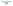
Fuse_Small | Description: Fuse, small symbol
Keys: fuse |
Galvanometer | Description: Galvanometer
Keys: galvanometer |
GDT_2Pin | Description: Gas Discharge Tube with 2 Pins
Keys: gdt |
GDT_3Pin | Description: Gas Discharge Tube with 3 Pins
Keys: gdt |
HallGenerator | Description: Hall effect generator
Keys: Hall generator magnet |
Heater | Description: Resistive heater
Keys: heater R resistor |
L | Description: Inductor
Keys: inductor choke coil reactor magnetic |
L_Coupled | Description: Coupled inductor
Keys: inductor choke coil reactor magnetic coupled |
L_Coupled_1243 | Description: Coupled inductor
Keys: inductor choke coil reactor magnetic coupled |
L_Coupled_1324 | Description: Coupled inductor
Keys: inductor choke coil reactor magnetic coupled |
L_Coupled_1342 | Description: Coupled inductor
Keys: inductor choke coil reactor magnetic coupled |
L_Coupled_1423 | Description: Coupled inductor
Keys: inductor choke coil reactor magnetic coupled |
L_Coupled_Small | Description: Coupled inductor, small symbol
Keys: inductor choke coil reactor magnetic coupled |
L_Coupled_Small_1243 | Description: Coupled inductor, small symbol
Keys: inductor choke coil reactor magnetic coupled |
L_Coupled_Small_1324 | Description: Coupled inductor, small symbol
Keys: inductor choke coil reactor magnetic coupled |
L_Coupled_Small_1342 | Description: Coupled inductor, small symbol
Keys: inductor choke coil reactor magnetic coupled |
L_Coupled_Small_1423 | Description: Coupled inductor, small symbol
Keys: inductor choke coil reactor magnetic coupled |
L_Ferrite | Description: Inductor with ferrite core
Keys: inductor choke coil reactor magnetic |
L_Ferrite_Coupled | Description: Coupled inductor with ferrite core
Keys: inductor choke coil reactor magnetic coupled |
L_Ferrite_Coupled_1243 | Description: Coupled inductor with ferrite core
Keys: inductor choke coil reactor magnetic coupled |
L_Ferrite_Coupled_1324 | Description: Coupled inductor with ferrite core
Keys: inductor choke coil reactor magnetic coupled |
L_Ferrite_Coupled_1342 | Description: Coupled inductor with ferrite core
Keys: inductor choke coil reactor magnetic coupled |
L_Ferrite_Coupled_1423 | Description: Coupled inductor with ferrite core
Keys: inductor choke coil reactor magnetic coupled |
L_Ferrite_Coupled_Small | Description: Coupled inductor with ferrite core, small symbol
Keys: inductor choke coil reactor magnetic coupled |
L_Ferrite_Coupled_Small_1243 | Description: Coupled inductor with ferrite core, small symbol
Keys: inductor choke coil reactor magnetic coupled |
L_Ferrite_Coupled_Small_1324 | Description: Coupled inductor with ferrite core, small symbol
Keys: inductor choke coil reactor magnetic coupled |
L_Ferrite_Coupled_Small_1342 | Description: Coupled inductor with ferrite core, small symbol
Keys: inductor choke coil reactor magnetic coupled |
L_Ferrite_Coupled_Small_1423 | Description: Coupled inductor with ferrite core, small symbol
Keys: inductor choke coil reactor magnetic coupled |
L_Ferrite_Small | Description: Inductor with ferrite core, small symbol
Keys: inductor choke coil reactor magnetic |
L_Iron | Description: Inductor with iron core
Keys: inductor choke coil reactor magnetic |
L_Iron_Coupled | Description: Coupled inductor with iron core
Keys: inductor choke coil reactor magnetic coupled |
L_Iron_Coupled_1243 | Description: Coupled inductor with iron core
Keys: inductor choke coil reactor magnetic coupled |
L_Iron_Coupled_1324 | Description: Coupled inductor with iron core
Keys: inductor choke coil reactor magnetic coupled |
L_Iron_Coupled_1342 | Description: Coupled inductor with iron core
Keys: inductor choke coil reactor magnetic coupled |
L_Iron_Coupled_1423 | Description: Coupled inductor with iron core
Keys: inductor choke coil reactor magnetic coupled |
L_Iron_Coupled_Small | Description: Coupled inductor with iron core, small symbol
Keys: inductor choke coil reactor magnetic coupled |
L_Iron_Coupled_Small_1243 | Description: Coupled inductor with iron core, small symbol
Keys: inductor choke coil reactor magnetic coupled |
L_Iron_Coupled_Small_1324 | Description: Coupled inductor with iron core, small symbol
Keys: inductor choke coil reactor magnetic coupled |
L_Iron_Coupled_Small_1342 | Description: Coupled inductor with iron core, small symbol
Keys: inductor choke coil reactor magnetic coupled |
L_Iron_Coupled_Small_1423 | Description: Coupled inductor with iron core, small symbol
Keys: inductor choke coil reactor magnetic coupled |
L_Iron_Small | Description: Inductor with iron core, small symbol
Keys: inductor choke coil reactor magnetic |
L_Small | Description: Inductor, small symbol
Keys: inductor choke coil reactor magnetic |
L_Trim | Description: Variable inductor
Keys: inductor choke coil reactor magnetic |
Lamp | Description: Lamp
Keys: lamp |
Lamp_Flash | Description: Flash lamp tube
Keys: flash lamp |
Lamp_Neon | Description: Neon lamp
Keys: neon lamp |
LED | Description: Light emitting diode
Keys: LED diode |
LED_ABGR | Description: RGB LED, anode/blue/green/red
Keys: LED RGB diode |
LED_ABRG | Description: RGB LED, anode/blue/red/green
Keys: LED RGB diode |
LED_AGBR | Description: RGB LED, anode/green/blue/red
Keys: LED RGB diode |
LED_AGRB | Description: RGB LED, anode/green/red/blue
Keys: LED RGB diode |
LED_ARBG | Description: RGB LED, anode/red/blue/green
Keys: LED RGB diode |
LED_ARGB | Description: RGB LED, anode/red/green/blue
Keys: LED RGB diode |
LED_BAGR | Description: RGB LED, blue/anode/green/red
Keys: LED RGB diode |
LED_BARG | Description: RGB LED, blue/anode/red/green
Keys: LED RGB diode |
LED_BGAR | Description: RGB LED, blue/green/anode/red
Keys: LED RGB diode |
LED_BGKR | Description: RGB LED, blue/green/cathode/red
Keys: LED RGB diode |
LED_BGRA | Description: RGB LED, blue/green/red/anode
Keys: LED RGB diode |
LED_BGRK | Description: RGB LED, blue/green/red/cathode
Keys: LED RGB diode |
LED_BKGR | Description: RGB LED, blue/cathode/green/red
Keys: LED RGB diode |
LED_BKRG | Description: RGB LED, blue/cathode/red/green
Keys: LED RGB diode |
LED_BRAG | Description: RGB LED, blue/red/anode/green
Keys: LED RGB diode |
LED_BRGA | Description: RGB LED, blue/red/green/anode
Keys: LED RGB diode |
LED_BRGK | Description: RGB LED, blue/red/green/cathode
Keys: LED RGB diode |
LED_BRKG | Description: RGB LED, blue/red/cathode/green
Keys: LED RGB diode |
LED_Dual_AAK | Description: Dual LED, common cathode on pin 3
Keys: LED diode bicolor dual |
LED_Dual_AAKK | Description: Dual LED, cathodes on pins 3 and 4
Keys: LED diode bicolor dual |
LED_Dual_AKA | Description: Dual LED, common cathode on pin 2
Keys: LED diode bicolor dual |
LED_Dual_AKAK | Description: Dual LED, cathodes on pins 2 and 4
Keys: LED diode bicolor dual |
LED_Dual_Bidirectional | Description: Dual LED, bidirectional
Keys: LED diode bicolor dual |
LED_Dual_KAK | Description: Dual LED, common anode on pin 2
Keys: LED diode bicolor dual |
LED_Dual_KAKA | Description: Dual LED, cathodes on pins 1 and 3
Keys: LED diode bicolor dual |
LED_Dual_KKA | Description: Dual LED, common anode on pin 3
Keys: LED diode bicolor dual |
LED_Filled | Description: Light emitting diode, filled shape
Keys: LED diode |
LED_GABR | Description: RGB LED, green/anode/blue/red
Keys: LED RGB diode |
LED_GARB | Description: RGB LED, green/anode/red/blue
Keys: LED RGB diode |
LED_GBAR | Description: RGB LED, green/blue/anode/red
Keys: LED RGB diode |
LED_GBKR | Description: RGB LED, green/blue/cathode/red
Keys: LED RGB diode |
LED_GBRA | Description: RGB LED, green/blue/red/anode
Keys: LED RGB diode |
LED_GBRK | Description: RGB LED, green/blue/red/cathode
Keys: LED RGB diode |
LED_GKBR | Description: RGB LED, green/cathode/blue/red
Keys: LED RGB diode |
LED_GKRB | Description: RGB LED, green/cathode/red/blue
Keys: LED RGB diode |
LED_GRAB | Description: RGB LED, green/red/anode/blue
Keys: LED RGB diode |
LED_GRBA | Description: RGB LED, green/red/blue/anode
Keys: LED RGB diode |
LED_GRBK | Description: RGB LED, green/red/blue/cathode
Keys: LED RGB diode |
LED_GRKB | Description: RGB LED, green/red/cathode/blue
Keys: LED RGB diode |
LED_KBGR | Description: RGB LED, cathode/blue/green/red
Keys: LED RGB diode |
LED_KBRG | Description: RGB LED, cathode/blue/red/green
Keys: LED RGB diode |
LED_KGBR | Description: RGB LED, cathode/green/blue/red
Keys: LED RGB diode |
LED_KGRB | Description: RGB LED, cathode/green/red/blue
Keys: LED RGB diode |
LED_KRBG | Description: RGB LED, cathode/red/blue/green
Keys: LED RGB diode |
LED_KRGB | Description: RGB LED, cathode/red/green/blue
Keys: LED RGB diode |
LED_Pad | Description: Light emitting diode with pad
Keys: LED diode pad |
LED_RABG | Description: RGB LED, red/anode/blue/green
Keys: LED RGB diode |
LED_RAGB | Description: RGB LED, red/anode/green/blue
Keys: LED RGB diode |
LED_RBAG | Description: RGB LED, red/blue/anode/green
Keys: LED RGB diode |
LED_RBGA | Description: RGB LED, red/blue/green/anode
Keys: LED RGB diode |
LED_RBGK | Description: RGB LED, red/blue/green/cathode
Keys: LED RGB diode |
LED_RBKG | Description: RGB LED, red/blue/cathode/green
Keys: LED RGB diode |
LED_RGAB | Description: RGB LED, red/green/anode/blue
Keys: LED RGB diode |
LED_RGB | Description: RGB LED, 6 pin package
Keys: LED RGB diode |
LED_RGB_EP | Description: RGB LED, 6 pin package with exposed pad
Keys: LED RGB diode |
LED_RGBA | Description: RGB LED, red/green/blue/anode
Keys: LED RGB diode |
LED_RGBK | Description: RGB LED, red/green/blue/cathode
Keys: LED RGB diode |
LED_RGKB | Description: RGB LED, red/green/cathode/blue
Keys: LED RGB diode |
LED_RKBG | Description: RGB LED, red/cathode/blue/green
Keys: LED RGB diode |
LED_RKGB | Description: RGB LED, red/cathode/green/blue
Keys: LED RGB diode |
LED_Series | Description: Several LEDs in series
Keys: LED diode |
LED_Series_Pad | Description: Several LEDs in series with exposed pad
Keys: LED diode pad |
LED_Small | Description: Light emitting diode, small symbol
Keys: LED diode light-emitting-diode |
LED_Small_Filled | Description: Light emitting diode, small symbol, filled shape
Keys: LED diode light-emitting-diode |
Memristor | Description: Memristor
Keys: memristor |
Microphone | Description: Microphone
Keys: microphone |
Microphone_Condenser | Description: Condenser microphone
Keys: capacitance condenser microphone |
Microphone_Crystal | Description: Crystal microphone
Keys: microphone crystal |
Microphone_Ultrasound | Description: Ultrasound receiver
Keys: microphone ultrasound crystal |
NetTie_2 | Description: Net tie, 2 pins
Keys: net tie short |
NetTie_3 | Description: Net tie, 3 pins
Keys: net tie short |
NetTie_3_Tee | Description: Net tie, 3 pins, tee
Keys: net tie short |
NetTie_4 | Description: Net tie, 4 pins
Keys: net tie short |
NetTie_4_Cross | Description: Net tie, 4 pins, cross
Keys: net tie short |
Ohmmeter | Description: Ohmmeter
Keys: ohmmeter resistance |
| Opamp_Dual | Description: Dual operational amplifier
Keys: dual opamp |
| Opamp_Quad | Description: Quad operational amplifier
Keys: quad opamp |
Oscilloscope | Description: Oscilloscope
Keys: oscilloscope |
PeltierElement | Description: Peltier element, thermoelectric cooler
Keys: Peltier TEC |
Polyfuse | Description: Resettable fuse, polymeric positive temperature coefficient
Keys: resettable fuse PTC PPTC polyfuse polyswitch |
Polyfuse_Small | Description: Resettable fuse, polymeric positive temperature coefficient, small symbol
Keys: resettable fuse PTC PPTC polyfuse polyswitch |
| Q_Dual_NMOS_G1S2G2D2S1D1 | Description: Dual NMOS transistor, 6 pin package
Keys: transistor NMOS N-MOS N-MOSFET |
| Q_Dual_NMOS_S1G1D2S2G2D1 | Description: Dual NMOS transistor, 6 pin package
Keys: transistor NMOS N-MOS N-MOSFET |
| Q_Dual_NMOS_S1G1S2G2D2D2D1D1 | Description: Dual NMOS transistor, 8 pin package
Keys: transistor NMOS N-MOS N-MOSFET |
| Q_Dual_NPN_C2C1E1E2 | Description: Double NPN transistors, current mirror configuration
Keys: transistor NPN |
| Q_Dual_NPN_NPN_BRT_E1B1C2E2B2C1 | Description: Dual NPN bias resistor transistor, 6 pin package
Keys: transistor NPN |
| Q_Dual_NPN_NPN_C2E2C1E1B1B2 | Description: Dual NPN transistor, 6 pin package
Keys: transistor NPN |
| Q_Dual_NPN_NPN_E1B1C2E2B2C1 | Description: Dual NPN transistor, 6 pin package
Keys: transistor NPN |
| Q_Dual_NPN_PNP_BRT_E1B1C2E2B2C1 | Description: Dual NPN/PNP bias resistor transistor, 6 pin package
Keys: transistor NPN |
| Q_Dual_NPN_PNP_E1B1C2E2B2C1 | Description: Dual NPN/PNP transistor, 6 pin package
Keys: transistor NPN PNP |
| Q_Dual_PMOS_G1S2G2D2S1D1 | Description: Dual PMOS transistor, 6 pin package
Keys: transistor PMOS P-MOS P-MOSFET |
| Q_Dual_PMOS_S1G1D2S2G2D1 | Description: Dual PMOS transistor, 6 pin package
Keys: transistor PMOS P-MOS P-MOSFET |
| Q_Dual_PMOS_S1G1S2G2D2D2D1D1 | Description: Dual PMOS transistor, 8 pin package
Keys: transistor PMOS P-MOS P-MOSFET |
| Q_Dual_PNP_C2C1E1E2 | Description: Double PNP transistors, current mirror configuration
Keys: transistor PNP |
| Q_Dual_PNP_NPN_BRT_E1B1C2E2B2C1 | Description: Dual PNP/NPN bias resistor transistor, 6 pin package
Keys: transistor NPN |
| Q_Dual_PNP_PNP_BRT_E1B1C2E2B2C1 | Description: Dual PNP bias resistor transistor, 6 pin package
Keys: transistor NPN |
| Q_Dual_PNP_PNP_C1B1B2C2E2E1 | Description: Dual PNP transistor, 6 pin package
Keys: transistor PNP
Datasheet: https://www.diodes.com/assets/Datasheets/ds30437.pdf |
| Q_Dual_PNP_PNP_C2E2C1E1B1B2 | Description: Dual PNP transistor, 6 pin package
Keys: transistor PNP |
| Q_Dual_PNP_PNP_E1B1C2E2B2C1 | Description: Dual PNP transistor, 6 pin package
Keys: transistor PNP |
Q_NIGBT_CEG | Description: N-IGBT transistor, collector/emitter/gate
Keys: transistor IGBT N-IGBT |
Q_NIGBT_CGE | Description: N-IGBT transistor, collector/gate/emitter
Keys: transistor IGBT N-IGBT |
Q_NIGBT_ECG | Description: N-IGBT transistor, emitter/collector/gate
Keys: transistor IGBT N-IGBT |
Q_NIGBT_ECGC | Description: N-IGBT transistor, emitter/collector/gate, collector connected to mounting plane
Keys: transistor IGBT N-IGBT |
Q_NIGBT_EGC | Description: N-IGBT transistor, emitter/gate/collector
Keys: transistor IGBT N-IGBT |
Q_NIGBT_GCE | Description: N-IGBT transistor, gate/collector/emitter
Keys: transistor IGBT N-IGBT |
Q_NIGBT_GCEC | Description: N-IGBT transistor, gate/collector/emitter, collector connected to mounting plane
Keys: transistor IGBT N-IGBT |
Q_NIGBT_GEC | Description: N-IGBT transistor, gate/emitter/collector
Keys: transistor IGBT N-IGBT |
Q_NJFET_DGS | Description: N-JFET transistor, drain/gate/source
Keys: transistor NJFET N-JFET |
Q_NJFET_DSG | Description: N-JFET transistor, drain/source/gate
Keys: transistor NJFET N-JFET |
Q_NJFET_GDS | Description: N-JFET transistor, gate/drain/source
Keys: transistor NJFET N-JFET |
Q_NJFET_GSD | Description: N-JFET transistor, gate/source/drain
Keys: transistor NJFET N-JFET |
Q_NJFET_SDG | Description: N-JFET transistor, source/drain/gate
Keys: transistor NJFET N-JFET |
Q_NJFET_SGD | Description: N-JFET transistor, source/gate/drain
Keys: transistor NJFET N-JFET |
| Q_NMOS_DGS | Description: N-MOSFET transistor, drain/gate/source
Keys: transistor NMOS N-MOS N-MOSFET |
| Q_NMOS_DSG | Description: N-MOSFET transistor, drain/source/gate
Keys: transistor NMOS N-MOS N-MOSFET |
| Q_NMOS_GDS | Description: N-MOSFET transistor, gate/drain/source
Keys: transistor NMOS N-MOS N-MOSFET |
| Q_NMOS_GDSD | Description: N-MOSFET transistor, gate/drain/source, drain connected to mounting plane
Keys: transistor NMOS N-MOS N-MOSFET |
| Q_NMOS_GSD | Description: N-MOSFET transistor, gate/source/drain
Keys: transistor NMOS N-MOS N-MOSFET |
| Q_NMOS_SDG | Description: N-MOSFET transistor, source/drain/gate
Keys: transistor NMOS N-MOS N-MOSFET |
| Q_NMOS_SDGD | Description: N-MOSFET transistor, source/drain/gate, drain connected to mounting plane
Keys: transistor NMOS N-MOS N-MOSFET |
| Q_NMOS_SGD | Description: N-MOSFET transistor, source/gate/drain
Keys: transistor NMOS N-MOS N-MOSFET |
| Q_NPN_BCE | Description: NPN transistor, base/collector/emitter
Keys: transistor NPN |
| Q_NPN_BCEC | Description: NPN transistor, base/collector/emitter, collector connected to mounting plane
Keys: transistor NPN |
| Q_NPN_BEC | Description: NPN transistor, base/emitter/collector
Keys: transistor NPN |
| Q_NPN_BEC_BRT | Description: NPN bias resistor transistor, base/emitter/collector
Keys: transistor NPN |
| Q_NPN_CBE | Description: NPN transistor, collector/base/emitter
Keys: transistor NPN |
| Q_NPN_CEB | Description: NPN transistor, collector/emitter/base
Keys: transistor NPN |
| Q_NPN_Darlington_BCE | Description: NPN Darlington transistor, base/collector/emitter
Keys: transistor NPN Darlington |
| Q_NPN_Darlington_BCEC | Description: NPN Darlington transistor, base/collector/emitter, collector connected to mounting plane
Keys: transistor NPN Darlington |
| Q_NPN_Darlington_BEC | Description: NPN Darlington transistor, base/emitter/collector
Keys: transistor NPN Darlington |
| Q_NPN_Darlington_CBE | Description: NPN Darlington transistor, collector/base/emitter
Keys: transistor NPN Darlington |
| Q_NPN_Darlington_CEB | Description: NPN Darlington transistor, collector/emitter/base
Keys: transistor NPN Darlington |
| Q_NPN_Darlington_EBC | Description: NPN Darlington transistor, emitter/base/collector
Keys: transistor NPN Darlington |
| Q_NPN_Darlington_ECB | Description: NPN Darlington transistor, emitter/collector/base
Keys: transistor NPN Darlington |
| Q_NPN_Darlington_ECBC | Description: NPN Darlington transistor, emitter/collector/base, collector connected to mounting plane
Keys: transistor NPN Darlington |
| Q_NPN_EBC | Description: NPN transistor, emitter/base/collector
Keys: transistor NPN |
| Q_NPN_ECB | Description: NPN transistor, emitter/collector/base
Keys: transistor NPN |
| Q_NPN_ECB_BRT | Description: NPN transistor, emitter/collector/base
Keys: transistor NPN |
| Q_NPN_ECBC | Description: NPN transistor, emitter/collector/base, collector connected to mounting plane
Keys: transistor NPN |
Q_NUJT_BEB | Description: N-Type unijunction transistor
Keys: transistor UJT |
Q_Photo_NPN | Description: NPN phototransistor, collector/emitter
Keys: phototransistor NPN |
Q_Photo_NPN_CBE | Description: NPN phototransistor, collector/base/emitter
Keys: phototransistor NPN |
Q_Photo_NPN_CE | Description: NPN phototransistor, collector/emitter
Keys: phototransistor NPN |
Q_Photo_NPN_EBC | Description: NPN phototransistor, emitter/base/collector
Keys: phototransistor NPN |
Q_Photo_NPN_EC | Description: NPN phototransistor, emitter/collector
Keys: phototransistor NPN |
Q_PJFET_DGS | Description: P-JFET transistor, drain/gate/source
Keys: transistor PJFET P-JFET |
Q_PJFET_DSG | Description: P-JFET transistor, drain/source/gate
Keys: transistor PJFET P-JFET |
Q_PJFET_GDS | Description: P-JFET transistor, gate/drain/source
Keys: transistor PJFET P-JFET |
Q_PJFET_GSD | Description: P-JFET transistor, gate/source/drain
Keys: transistor PJFET P-JFET |
Q_PJFET_SDG | Description: P-JFET transistor, source/drain/gate
Keys: transistor PJFET P-JFET |
Q_PJFET_SGD | Description: P-JFET transistor, source/gate/drain
Keys: transistor PJFET P-JFET |
| Q_PMOS_DGS | Description: P-MOSFET transistor, drain/gate/source
Keys: transistor PMOS P-MOS P-MOSFET |
| Q_PMOS_DSG | Description: P-MOSFET transistor, drain/source/gate
Keys: transistor PMOS P-MOS P-MOSFET |
| Q_PMOS_GDS | Description: P-MOSFET transistor, gate/drain/source
Keys: transistor PMOS P-MOS P-MOSFET |
| Q_PMOS_GDSD | Description: P-MOSFET transistor, gate/drain/source, drain connected to mounting plane
Keys: transistor PMOS P-MOS P-MOSFET |
| Q_PMOS_GSD | Description: P-MOSFET transistor, gate/source/drain
Keys: transistor PMOS P-MOS P-MOSFET |
| Q_PMOS_SDG | Description: P-MOSFET transistor, source/drain/gate
Keys: transistor PMOS P-MOS P-MOSFET |
| Q_PMOS_SDGD | Description: P-MOSFET transistor, source/drain/gate, drain connected to mounting plane
Keys: transistor PMOS P-MOS P-MOSFET |
| Q_PMOS_SGD | Description: P-MOSFET transistor, source/gate/drain
Keys: transistor PMOS P-MOS P-MOSFET |
| Q_PNP_BCE | Description: PNP transistor, base/collector/emitter
Keys: transistor PNP |
| Q_PNP_BCEC | Description: PNP transistor, base/collector/emitter, collector connected to mounting plane
Keys: transistor PNP |
| Q_PNP_BEC | Description: PNP transistor, base/emitter/collector
Keys: transistor PNP |
| Q_PNP_BEC_BRT | Description: PNP bias resistor transistor, base/emitter/collector
Keys: transistor PNP |
| Q_PNP_CBE | Description: PNP transistor, collector/base/emitter
Keys: transistor PNP |
| Q_PNP_CEB | Description: PNP transistor, collector/emitter/base
Keys: transistor PNP |
| Q_PNP_Darlington_BCE | Description: PNP Darlington transistor, base/collector/emitter
Keys: transistor PNP Darlington |
| Q_PNP_Darlington_BCEC | Description: PNP Darlington transistor, base/collector/emitter, collector connected to mounting plane
Keys: transistor PNP Darlington |
| Q_PNP_Darlington_BEC | Description: PNP Darlington transistor, base/emitter/collector
Keys: transistor PNP Darlington |
| Q_PNP_Darlington_CBE | Description: PNP Darlington transistor, collector/base/emitter
Keys: transistor PNP Darlington |
| Q_PNP_Darlington_CEB | Description: PNP Darlington transistor, collector/emitter/base
Keys: transistor PNP Darlington |
| Q_PNP_Darlington_EBC | Description: PNP Darlington transistor, emitter/base/collector
Keys: transistor PNP Darlington |
| Q_PNP_Darlington_ECB | Description: PNP Darlington transistor, emitter/collector/base
Keys: transistor PNP Darlington |
| Q_PNP_Darlington_ECBC | Description: PNP Darlington transistor, emitter/collector/base, collector connected to mounting plane
Keys: transistor PNP Darlington |
| Q_PNP_EBC | Description: PNP transistor, emitter/base/collector
Keys: transistor PNP |
| Q_PNP_ECB | Description: PNP transistor, emitter/collector/base
Keys: transistor PNP |
| Q_PNP_ECB_BRT | Description: PNP bias resistor transistor, emitter/collector/base
Keys: transistor PNP |
| Q_PNP_ECBC | Description: PNP transistor, emitter/collector/base, collector connected to mounting plane
Keys: transistor PNP |
Q_PUJT_BEB | Description: P-Type unijunction transistor
Keys: transistor UJT |
Q_SCR_AGK | Description: Silicon controlled rectifier, anode/gate/cathode
Keys: SCR thyristor |
Q_SCR_AKG | Description: Silicon controlled rectifier, anode/cathode/gate
Keys: SCR thyristor |
Q_SCR_GAK | Description: Silicon controlled rectifier, gate/anode/cathode
Keys: SCR thyristor |
Q_SCR_GKA | Description: Silicon controlled rectifier, gate/cathode/anode
Keys: SCR thyristor |
Q_SCR_KAG | Description: Silicon controlled rectifier, cathode/anode/gate
Keys: SCR thyristor |
Q_SCR_KGA | Description: Silicon controlled rectifier, cathode/gate/anode
Keys: SCR thyristor |
| Q_TRIAC_A1A2G | Description: Triode for alternating current, anode1/anode2/gate
Keys: TRIAC |
| Q_TRIAC_A1GA2 | Description: Triode for alternating current, anode1/gate/anode2
Keys: TRIAC |
| Q_TRIAC_A2A1G | Description: Triode for alternating current, anode2/anode1/gate
Keys: TRIAC |
| Q_TRIAC_A2GA1 | Description: Triode for alternating current, anode2/gate/anode1
Keys: TRIAC |
| Q_TRIAC_GA1A2 | Description: Triode for alternating current, gate/anode1/anode2
Keys: TRIAC |
| Q_TRIAC_GA2A1 | Description: Triode for alternating current, gate/anode2/anode1
Keys: TRIAC |
R | Description: Resistor
Keys: R res resistor |
R_Network03 | Description: 3 resistor network, star topology, bussed resistors, small symbol
Keys: R network star-topology
Datasheet: http://www.vishay.com/docs/31509/csc.pdf |
R_Network03_Split | Description: 3 resistor network, star topology, bussed resistors, split
Keys: R network star-topology
Datasheet: http://www.vishay.com/docs/31509/csc.pdf |
R_Network03_US | Description: 3 resistor network, star topology, bussed resistors, small US symbol
Keys: R network star-topology
Datasheet: http://www.vishay.com/docs/31509/csc.pdf |
R_Network04 | Description: 4 resistor network, star topology, bussed resistors, small symbol
Keys: R network star-topology
Datasheet: http://www.vishay.com/docs/31509/csc.pdf |
R_Network04_Split | Description: 4 resistor network, star topology, bussed resistors, split
Keys: R network star-topology
Datasheet: http://www.vishay.com/docs/31509/csc.pdf |
R_Network04_US | Description: 4 resistor network, star topology, bussed resistors, small US symbol
Keys: R network star-topology
Datasheet: http://www.vishay.com/docs/31509/csc.pdf |
R_Network05 | Description: 5 resistor network, star topology, bussed resistors, small symbol
Keys: R network star-topology
Datasheet: http://www.vishay.com/docs/31509/csc.pdf |
R_Network05_Split | Description: 5 resistor network, star topology, bussed resistors, split
Keys: R network star-topology
Datasheet: http://www.vishay.com/docs/31509/csc.pdf |
R_Network05_US | Description: 5 resistor network, star topology, bussed resistors, small US symbol
Keys: R network star-topology
Datasheet: http://www.vishay.com/docs/31509/csc.pdf |
R_Network06 | Description: 6 resistor network, star topology, bussed resistors, small symbol
Keys: R network star-topology
Datasheet: http://www.vishay.com/docs/31509/csc.pdf |
R_Network06_Split | Description: 6 resistor network, star topology, bussed resistors, split
Keys: R network star-topology
Datasheet: http://www.vishay.com/docs/31509/csc.pdf |
R_Network06_US | Description: 6 resistor network, star topology, bussed resistors, small US symbol
Keys: R network star-topology
Datasheet: http://www.vishay.com/docs/31509/csc.pdf |
R_Network07 | Description: 7 resistor network, star topology, bussed resistors, small symbol
Keys: R network star-topology
Datasheet: http://www.vishay.com/docs/31509/csc.pdf |
R_Network07_Split | Description: 7 resistor network, star topology, bussed resistors, split
Keys: R network star-topology
Datasheet: http://www.vishay.com/docs/31509/csc.pdf |
R_Network07_US | Description: 7 resistor network, star topology, bussed resistors, small US symbol
Keys: R network star-topology
Datasheet: http://www.vishay.com/docs/31509/csc.pdf |
R_Network08 | Description: 8 resistor network, star topology, bussed resistors, small symbol
Keys: R network star-topology
Datasheet: http://www.vishay.com/docs/31509/csc.pdf |
R_Network08_Split | Description: 8 resistor network, star topology, bussed resistors, split
Keys: R network star-topology
Datasheet: http://www.vishay.com/docs/31509/csc.pdf |
R_Network08_US | Description: 8 resistor network, star topology, bussed resistors, small US symbol
Keys: R network star-topology
Datasheet: http://www.vishay.com/docs/31509/csc.pdf |
R_Network09 | Description: 9 resistor network, star topology, bussed resistors, small symbol
Keys: R network star-topology
Datasheet: http://www.vishay.com/docs/31509/csc.pdf |
R_Network09_Split | Description: 9 resistor network, star topology, bussed resistors, split
Keys: R network star-topology
Datasheet: http://www.vishay.com/docs/31509/csc.pdf |
R_Network09_US | Description: 9 resistor network, star topology, bussed resistors, small US symbol
Keys: R network star-topology
Datasheet: http://www.vishay.com/docs/31509/csc.pdf |
R_Network10 | Description: 10 resistor network, star topology, bussed resistors, small symbol
Keys: R network star-topology
Datasheet: http://www.vishay.com/docs/31509/csc.pdf |
R_Network10_Split | Description: 10 resistor network, star topology, bussed resistors, split
Keys: R network star-topology
Datasheet: http://www.vishay.com/docs/31509/csc.pdf |
R_Network10_US | Description: 10 resistor network, star topology, bussed resistors, small US symbol
Keys: R network star-topology
Datasheet: http://www.vishay.com/docs/31509/csc.pdf |
R_Network11 | Description: 11 resistor network, star topology, bussed resistors, small symbol
Keys: R network star-topology
Datasheet: http://www.vishay.com/docs/31509/csc.pdf |
R_Network11_Split | Description: 11 resistor network, star topology, bussed resistors, split
Keys: R network star-topology
Datasheet: http://www.vishay.com/docs/31509/csc.pdf |
R_Network11_US | Description: 11 resistor network, star topology, bussed resistors, small US symbol
Keys: R network star-topology
Datasheet: http://www.vishay.com/docs/31509/csc.pdf |
R_Network12 | Description: 12 resistor network, star topology, bussed resistors, small symbol
Keys: R network star-topology
Datasheet: http://www.vishay.com/docs/31509/csc.pdf |
R_Network12_Split | Description: 12 resistor network, star topology, bussed resistors, split
Keys: R network star-topology
Datasheet: http://www.vishay.com/docs/31509/csc.pdf |
R_Network12_US | Description: 12 resistor network, star topology, bussed resistors, small US symbol
Keys: R network star-topology
Datasheet: http://www.vishay.com/docs/31509/csc.pdf |
R_Network13 | Description: 13 resistor network, star topology, bussed resistors, small symbol
Keys: R network star-topology
Datasheet: http://www.vishay.com/docs/31509/csc.pdf |
R_Network13_Split | Description: 13 resistor network, star topology, bussed resistors, split
Keys: R network star-topology
Datasheet: http://www.vishay.com/docs/31509/csc.pdf |
R_Network13_US | Description: 13 resistor network, star topology, bussed resistors, small US symbol
Keys: R network star-topology
Datasheet: http://www.vishay.com/docs/31509/csc.pdf |
R_Network_Dividers_x02_SIP | Description: 2 voltage divider network, dual terminator, SIP package
Keys: R network divider topology
Datasheet: http://www.vishay.com/docs/31509/csc.pdf |
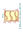
R_Network_Dividers_x03_SIP | Description: 3 voltage divider network, dual terminator, SIP package
Keys: R network divider topology
Datasheet: http://www.vishay.com/docs/31509/csc.pdf |
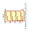
R_Network_Dividers_x04_SIP | Description: 4 voltage divider network, dual terminator, SIP package
Keys: R network divider topology
Datasheet: http://www.vishay.com/docs/31509/csc.pdf |
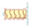
R_Network_Dividers_x05_SIP | Description: 5 voltage divider network, dual terminator, SIP package
Keys: R network divider topology
Datasheet: http://www.vishay.com/docs/31509/csc.pdf |
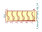
R_Network_Dividers_x06_SIP | Description: 6 voltage divider network, dual terminator, SIP package
Keys: R network divider topology
Datasheet: http://www.vishay.com/docs/31509/csc.pdf |
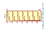
R_Network_Dividers_x07_SIP | Description: 7 voltage divider network, dual terminator, SIP package
Keys: R network divider topology
Datasheet: http://www.vishay.com/docs/31509/csc.pdf |
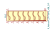
R_Network_Dividers_x08_SIP | Description: 8 voltage divider network, dual terminator, SIP package
Keys: R network divider topology
Datasheet: http://www.vishay.com/docs/31509/csc.pdf |
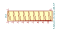
R_Network_Dividers_x09_SIP | Description: 9 voltage divider network, dual terminator, SIP package
Keys: R network divider topology
Datasheet: http://www.vishay.com/docs/31509/csc.pdf |
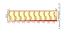
R_Network_Dividers_x10_SIP | Description: 10 voltage divider network, dual terminator, SIP package
Keys: R network divider topology
Datasheet: http://www.vishay.com/docs/31509/csc.pdf |
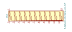
R_Network_Dividers_x11_SIP | Description: 11 voltage divider network, dual terminator, SIP package
Keys: R network divider topology
Datasheet: http://www.vishay.com/docs/31509/csc.pdf |
R_Pack02 | Description: 2 resistor network, parallel topology
Keys: R network parallel topology isolated |
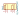
R_Pack02_SIP | Description: 2 resistor network, parallel topology, SIP package
Keys: R network parallel topology isolated
Datasheet: http://www.vishay.com/docs/31509/csc.pdf |
R_Pack02_SIP_Split | Description: 2 resistor network, parallel topology, SIP package, split
Keys: R network parallel topology isolated
Datasheet: http://www.vishay.com/docs/31509/csc.pdf |
R_Pack02_Split | Description: 2 resistor network, parallel topology, split
Keys: R network parallel topology isolated |
R_Pack03 | Description: 3 resistor network, parallel topology
Keys: R network parallel topology isolated |
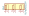
R_Pack03_SIP | Description: 3 resistor network, parallel topology, SIP package
Keys: R network parallel topology isolated
Datasheet: http://www.vishay.com/docs/31509/csc.pdf |
R_Pack03_SIP_Split | Description: 3 resistor network, parallel topology, SIP package, split
Keys: R network parallel topology isolated
Datasheet: http://www.vishay.com/docs/31509/csc.pdf |
R_Pack03_Split | Description: 3 resistor network, parallel topology, split
Keys: R network parallel topology isolated |
R_Pack04 | Description: 4 resistor network, parallel topology
Keys: R network parallel topology isolated |
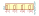
R_Pack04_SIP | Description: 4 resistor network, parallel topology, SIP package
Keys: R network parallel topology isolated
Datasheet: http://www.vishay.com/docs/31509/csc.pdf |
R_Pack04_SIP_Split | Description: 4 resistor network, parallel topology, SIP package, split
Keys: R network parallel topology isolated
Datasheet: http://www.vishay.com/docs/31509/csc.pdf |
R_Pack04_Split | Description: 4 resistor network, parallel topology, split
Keys: R network parallel topology isolated |
R_Pack05 | Description: 5 resistor network, parallel topology
Keys: R network parallel topology isolated |
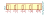
R_Pack05_SIP | Description: 5 resistor network, parallel topology, SIP package
Keys: R network parallel topology isolated
Datasheet: http://www.vishay.com/docs/31509/csc.pdf |
R_Pack05_SIP_Split | Description: 5 resistor network, parallel topology, SIP package, split
Keys: R network parallel topology isolated
Datasheet: http://www.vishay.com/docs/31509/csc.pdf |
R_Pack05_Split | Description: 5 resistor network, parallel topology, split
Keys: R network parallel topology isolated |
R_Pack06 | Description: 6 resistor network, parallel topology
Keys: R network parallel topology isolated |
R_Pack06_SIP | Description: 6 resistor network, parallel topology, SIP package
Keys: R network parallel topology isolated
Datasheet: http://www.vishay.com/docs/31509/csc.pdf |
R_Pack06_SIP_Split | Description: 6 resistor network, parallel topology, SIP package, split
Keys: R network parallel topology isolated
Datasheet: http://www.vishay.com/docs/31509/csc.pdf |
R_Pack06_Split | Description: 6 resistor network, parallel topology, split
Keys: R network parallel topology isolated |
R_Pack07 | Description: 7 resistor network, parallel topology
Keys: R network parallel topology isolated |
R_Pack07_SIP | Description: 7 resistor network, parallel topology, SIP package
Keys: R network parallel topology isolated
Datasheet: http://www.vishay.com/docs/31509/csc.pdf |
R_Pack07_SIP_Split | Description: 7 resistor network, parallel topology, SIP package, split
Keys: R network parallel topology isolated
Datasheet: http://www.vishay.com/docs/31509/csc.pdf |
R_Pack07_Split | Description: 7 resistor network, parallel topology, split
Keys: R network parallel topology isolated |
R_Pack08 | Description: 8 resistor network, parallel topology
Keys: R network parallel topology isolated |
R_Pack08_Split | Description: 8 resistor network, parallel topology, split
Keys: R network parallel topology isolated |
R_Pack09 | Description: 9 resistor network, parallel topology
Keys: R network parallel topology isolated |
R_Pack09_Split | Description: 9 resistor network, parallel topology, split
Keys: R network parallel topology isolated |
R_Pack10 | Description: 10 resistor network, parallel topology
Keys: R network parallel topology isolated |
R_Pack10_Split | Description: 10 resistor network, parallel topology, split
Keys: R network parallel topology isolated |
R_Pack11 | Description: 11 resistor network, parallel topology
Keys: R network parallel topology isolated |
R_Pack11_Split | Description: 11 resistor network, parallel topology, split
Keys: R network parallel topology isolated |
R_Photo | Description: Photoresistor
Keys: resistor variable light sensitive opto LDR |
R_Potentiometer | Description: Potentiometer
Keys: resistor variable |
R_Potentiometer_Dual | Description: Dual potentiometer
Keys: resistor variable |
R_Potentiometer_Dual_Separate | Description: Dual potentiometer, separate units
Keys: resistor variable |
R_Potentiometer_MountingPin | Description: Potentiometer with a mounting pin
Keys: resistor variable |
R_Potentiometer_Small | Description: Potentiometer
Keys: resistor variable |
R_Potentiometer_Trim | Description: Trim-potentiometer
Keys: resistor variable trimpot trimmer |
R_Potentiometer_Trim_US | Description: Trim-potentiometer, US symbol
Keys: resistor variable trimpot trimmer |
R_Potentiometer_US | Description: Potentiometer, US symbol
Keys: resistor variable |
R_Shunt | Description: Shunt resistor
Keys: R res shunt resistor |
R_Shunt_US | Description: Shunt resistor, US symbol
Keys: R res shunt resistor |
R_Small | Description: Resistor, small symbol
Keys: R resistor |
R_Small_US | Description: Resistor, small US symbol
Keys: r resistor |
R_Trim | Description: Trimmable resistor (preset resistor)
Keys: R res resistor variable potentiometer trimmer |
R_US | Description: Resistor, US symbol
Keys: R res resistor |
R_Variable | Description: Variable resistor
Keys: R res resistor variable potentiometer rheostat |
R_Variable_US | Description: Variable resistor, US symbol
Keys: R res resistor variable potentiometer rheostat |
Resonator | Description: Three pin ceramic resonator
Keys: ceramic resonator |
Resonator_Small | Description: Three pin ceramic resonator, small symbol
Keys: ceramic resonator |
RFShield_OnePiece | Description: One-piece EMI RF shielding cabinet
Keys: RF EMI shielding cabinet |
RFShield_TwoPieces | Description: Two-piece EMI RF shielding cabinet
Keys: RF EMI shielding cabinet |
RotaryEncoder | Description: Rotary encoder, dual channel, incremental quadrate outputs
Keys: rotary switch encoder |
RotaryEncoder_Switch | Description: Rotary encoder, dual channel, incremental quadrate outputs, with switch
Keys: rotary switch encoder switch push button |
Solar_Cell | Description: Single solar cell
Keys: solar cell |
Solar_Cells | Description: Multiple solar cells
Keys: solar cell |
SparkGap | Description: Spark gap
Keys: spark gap ESD electrostatic suppression |
Speaker | Description: Speaker
Keys: speaker sound |
Speaker_Crystal | Description: Crystal speaker/transducer
Keys: crystal speaker ultrasonic transducer |
Speaker_Ultrasound | Description: Ultrasonic transducer
Keys: crystal speaker ultrasonic transducer |
Thermistor | Description: Temperature dependent resistor
Keys: R res thermistor |
Thermistor_NTC | Description: Temperature dependent resistor, negative temperature coefficient
Keys: thermistor NTC resistor sensor RTD |
Thermistor_NTC_3Wire | Description: Temperature dependent resistor, negative temperature coefficient, 3-wire interface
Keys: thermistor NTC resistor sensor RTD |
Thermistor_NTC_4Wire | Description: Temperature dependent resistor, negative temperature coefficient, 4-wire interface
Keys: thermistor NTC resistor sensor RTD |
Thermistor_NTC_US | Description: Temperature dependent resistor, negative temperature coefficient, US symbol
Keys: thermistor NTC resistor sensor RTD |
Thermistor_PTC | Description: Temperature dependent resistor, positive temperature coefficient
Keys: resistor PTC thermistor sensor RTD |
Thermistor_PTC_3Wire | Description: Temperature dependent resistor, positive temperature coefficient, 3-wire interface
Keys: resistor PTC thermistor sensor RTD |
Thermistor_PTC_4Wire | Description: Temperature dependent resistor, positive temperature coefficient, 3-wire interface
Keys: resistor PTC thermistor sensor RTD |
Thermistor_PTC_US | Description: Temperature dependent resistor, positive temperature coefficient, US symbol
Keys: resistor PTC thermistor sensor RTD |
Thermistor_US | Description: Thermistor, temperature dependent resistor, US symbol
Keys: R res thermistor |
Thermocouple | Description: Thermocouple
Keys: thermocouple temperature sensor cold junction |
Thermocouple_Alt | Description: Thermocouple with connector block
Keys: thermocouple temperature sensor cold junction |
Thermocouple_Block | Description: Thermocouple with isothermal block
Keys: thermocouple temperature sensor cold junction |
Transformer_1P_1S | Description: Transformer, single primary, single secondary
Keys: transformer coil magnet |
Transformer_1P_1S_SO8 | Description: Transformer, single primary, single secondary, SO-8 package
Keys: transformer coil magnet |
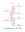
Transformer_1P_2S | Description: Transformer, single primary, dual secondary
Keys: transformer coil magnet |
Transformer_1P_SS | Description: Transformer, single primary, split secondary
Keys: transformer coil magnet |
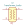
Transformer_Audio | Description: Audio transformer
Keys: transformer coil magnet sound |
Transformer_SP_1S | Description: Transformer, split primary, single secondary
Keys: transformer coil magnet |
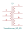
Transformer_SP_2S | Description: Transformer, split primary, dual secondary
Keys: transformer coil magnet |
Varistor | Description: Voltage dependent resistor
Keys: VDR resistance |
Varistor_US | Description: Voltage dependent resistor, US symbol
Keys: VDR resistance |
VoltageDivider | Description: Voltage divider
Keys: R network voltage divider |
VoltageDivider_CenterPin1 | Description: Voltage divider, center on pin 1
Keys: R network voltage divider |
VoltageDivider_CenterPin3 | Description: Voltage divider, center on pin 3
Keys: R network voltage divider |
Voltmeter_AC | Description: AC voltmeter
Keys: voltmeter AC |
Voltmeter_DC | Description: DC voltmeter
Keys: voltmeter DC |